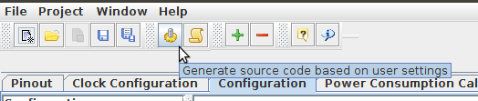
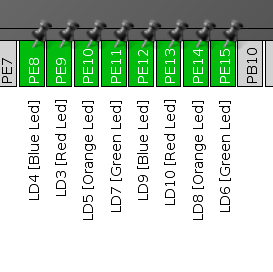

Подобных статей достаточно много на просторах интернета, но хотелось бы написать актуальную вариацию. Лично я долгое время мучался в связке: Ubuntu — основная система, разработка под STM32 в виртуальной машине Windows 7. Но однажды меня это очень утомило и я таки решил потратить несколько дней на поиск решения и вылизывание полноценной среды под Linux Ubuntu. Забегу вперёд и скажу, что идеала я так и не добился, не удалось сделать realtime debug, как в Keil. В остальном всё очень пристойно.
Внимание, очень много текста и картинок!
Что в итоге у меня получилось:
Шаги, которые необходимо проделать:
Инструкция дана для абсолютно чистой машины на базе Ubuntu 16.04, в вашем случае могут быть уже установлены какие-то компоненты. В этой статье и в последующих буду приводить примеры для отладочной платы STM32F3DISCOVERY. Она основана на МК STM32F303VCT6 c 256-Кбайт Flash и 48-КБайт RAM в корпусе LQFP100. Вы можете адаптировать настройки под ваш МК очень легко благодаря STM32CubeMX.
Всё указано для пользователя с именем bulkin, не забудьте менять его при настройке.
sudo apt install git clang cmake python-pip
sudo pip install --upgrade pip
Я предпочитаю устанавливать программы не из PPA в отдельную папку в домашней директории ~/Programs. Во-первых, устанавливаю с правами локального пользователя. Во-вторых, папка с именем на английском, т.к. некоторые программы не любят кириллицу в пути.
Библиотеки предпочитаю хранить в /opt/libs.
mkdir ~/Programs
sudo mkdir /opt/libs
sudo chown bulkin:bulkin /opt/libs
sudo apt install lib32ncurses5
sudo apt install default-jre
Действуем согласно инструкции самого ST.
Скачиваем дистрибутив с сайта ST (потребуется регистрация), разархивируем и запустим файл с расширением .linux. Если установщик не запускается, скорее всего не установлены 32-битные библиотеки. Путь установки меняем на /home/bulkin/Programs/STM32CubeMX, устанавливаем.
touch ~/.local/share/applications/CubeMX.desktop
chmod ug+x ~/.local/share/applications/CubeMX.desktop
nano ~/.local/share/applications/CubeMX.desktop
Вставим следующее содержимое:
[Desktop Entry]
Version=1.0
Name=CubeMX
Comment=STM32 CubeMX
Exec=/home/bulkin/Programs/STM32CubeMX/STM32CubeMX
Icon=/home/bulkin/Programs/STM32CubeMX/help/STM32CubeMX.ico
Terminal=false
Type=Application
Categories=Utility;Application;
Теперь в dash иконка появится в разделе Приложения, поиск в dash будет работать после перелогинивания.
Запускаем STM32CubeMX, идём в настройки Help->Updater Settings и меняем путь для хранения библиотек на /opt/libs/STM32Cube/Repository/
Установим библиотеку для STM32F3. Открываем Help->Install New Libriaries, ставим галку Firmware Package for Family STM32F3, жмём Install Now
Вообще, SW4 вполне самодостаточная IDE. Но я люблю кодить именно в ST3, а компиляция и дебаг в SW4. Инструкция по установке ST3 для любых дистрибутивов лежит тут.
wget -qO - https://download.sublimetext.com/sublimehq-pub.gpg | sudo apt-key add -
sudo apt install apt-transport-https
echo "deb https://download.sublimetext.com/ apt/stable/" | sudo tee /etc/apt/sources.list.d/sublime-text.list
sudo apt update
sudo apt install sublime-text cppcheck python-configparser
sudo pip install --upgrade cmake
sudo pip install cmakelint
sudo pip install cubemx2cmake
После этого стоит перелогиниться.
Для начала установим Package Control.
Запускаем ST3 и жмём CTRL+`, в командную строку вставляем код и жмём ENTER:
import urllib.request,os,hashlib; h = '6f4c264a24d933ce70df5dedcf1dcaee' + 'ebe013ee18cced0ef93d5f746d80ef60'; pf = 'Package Control.sublime-package'; ipp = sublime.installed_packages_path(); urllib.request.install_opener( urllib.request.build_opener( urllib.request.ProxyHandler()) ); by = urllib.request.urlopen( 'http://packagecontrol.io/' + pf.replace(' ', '%20')).read(); dh = hashlib.sha256(by).hexdigest(); print('Error validating download (got %s instead of %s), please try manual install' % (dh, h)) if dh != h else open(os.path.join( ipp, pf), 'wb' ).write(by)
Для полноценной работы нам понадобятся такие пакеты:
Устанавливаем нужные пакеты из меню Preferences -> Package Control -> Install Package.
Откроем Preferences -> Settings и вставляем в правую половину:
{
"always_show_minimap_viewport": true,
"drag_text": false,
"ensure_newline_at_eof_on_save": true,
"fallback_encoding": "Cyrillic (Windows 1251)",
"font_size": 10,
"highlight_modified_tabs": true,
"ignored_packages":
[
"Vintage"
],
"index_exclude_patterns":
[
"*.log",
"*.bak"
],
"show_encoding": true,
"translate_tabs_to_spaces": true,
"trim_trailing_white_space_on_save": true
}
Настраиваем clang на C99 и указываем директории с базовыми библиотеками вроде StdLib.
Открываем Preferences -> EasyClangComplete -> Settings и вставляем в правую половину:
{
"common_flags" : [
"-I/usr/include",
"-I/usr/lib/clang/$clang_version/include",
],
"c_flags" : [ "-std=c99" ],
"clang_binary" : "clang",
"verbose" : false,
"use_libclang_caching": true,
}
Открываем Preferences -> Sublimelinter -> Settings и вставляем в правую половину:
Форматирование настроено на мой вкус. Подробное описание всех пунктов есть в Preferences -> SublimeAStyleFormatter -> Settings — Default
Открываем Preferences -> SublimeAStyleFormatter -> Settings — User и вставляем:
{
"options_default": {
"style": "google",
"indent": "spaces",
"indent-spaces": 4,
"indent-col1-comments": true,
"indent-switches": true,
"indent-cases": true,
"break-blocks": "default",
"attach-namespaces": true,
"break-blocks": "default",
"add-brackets": true,
"lineend": "linux"
}
}
Полностью процесс установки описан на сайте OpenSTM32.org.
Регистрируемся на www.openstm32.org и скачиваем инсталятор.
Переходим в папку загрузки и вводим
bash install_sw4stm32_linux_64bits-latest.run
Если у вас установлен gksudo, установщик запустится в графическом режиме. У меня не установлен, потому всё в терминале.
Несколько раз вводим 1 в качестве согласия со всякой ерундой. Указываем путь установки:
/home/bulkin/Programs/SystemWorkbench
Снова соглашаемся со всем, как девственник в свой первый раз, и ждём окончания установки.
chmod +x "/home/bulkin/Рабочий стол/sw4stm32_shortcut.desktop"
cp "/home/bulkin/Рабочий стол/sw4stm32_shortcut.desktop" ~/.local/share/applications/sw4stm32_shortcut.desktop
Запускаем SW4, соглашаемся с созданием рабочей области, кликаем на workbench. При первом запуске будет установлен ARM Toolchain.
Сначала установим удобную тему. Открываем Help->Install New Software, жмём Add.. и вводим:
Eclipse Color Theme
http://eclipse-color-theme.github.io/update/
Жмём ОК, выбираем Eclipse Color Theme и жмём Next > и дальше всё по накатанной.
Включим тему: Window -> Preferences ->Appearance -> Color Theme. Я люблю Monokai, а вы можете позже подобрать, какую вам нравится.
Ну вот и пришло время запустить наш первый проект и проверить среду разработки в работе.
Повторюсь, я буду приводить примеры для отладочной платы STM32F3DISCOVERY. Делаю всё максимально просто, нам ведь банально надо проверить настройки среды разработки.
Запустим STM32CubeMX, выберем в главном окне New Project. Откроем вкладку Board Selector. Выбираем нашу плату:
И два щелчка на нашей плате.
В левом меню включим:
Переходим во вкладку Clock Configuration:
Открываем Project->Settings из верхнего меню.
Откроем вкладку Code Generator и включим "Add necessary libriary files as reference in the toolchain project configuration file"
Жмём ОК и теперь мы готовы создать проект. Жмите Generate Source Code в верхнем меню:

Для начала надо создать CMakeList.txt. Для этого открываем консоль в корне нашего проекта и вводим:
cubemx2cmake
Из нашего STM32Discovery-SW4-Test.ioc будут созданы необходимые для компиляции из командной строки файлы. Но нас интересует только CMakeLists.txt.template. Переименуем его в CMakeLists.txt.
Project->Add folder to Project... и выбираем папку нашего нового проекта.
Для начала надо добавить в CMakeList.txt недостающие пути к библиотекам. Это нужно для корректной работы EasyClangComplete. Слева щёлкаем на CMakeList.txt и вносим изменения:
Над строкой set(USER_INCLUDE Inc) добавляем:
set(STM32CUBEREPO /opt/libs/STM32Cube/Repository/STM32Cube_FW_F3_V1.9.0)
Все последующие set вплоть до file меняем на:
set(USER_INCLUDE Inc)
set(CMSIS_DEVICE_INCLUDE ${STM32CUBEREPO}/Drivers/CMSIS/Device/ST/STM32F3xx/Include)
set(CMSIS_INCLUDE ${STM32CUBEREPO}/Drivers/CMSIS/Include)
set(CMSIS_RTOS_INCLUDE ${STM32CUBEREPO}/Middlewares/Third_Party/FreeRTOS/Source/CMSIS_RTOS)
set(HAL_INCLUDE ${STM32CUBEREPO}/Drivers/STM32F3xx_HAL_Driver/Inc)
set(FREERTOS_INCLUDE ${STM32CUBEREPO}/Middlewares/Third_Party/FreeRTOS/Source/include)
Ну и в раздел include_directories в самый конец добавить ${FREERTOS_INCLUDE} ${CMSIS_DEVICE_INCLUDE}.
include_directories(${USER_INCLUDE} ${CMSIS_DEVICE_INCLUDE} ${CMSIS_INCLUDE} ${HAL_INCLUDE} ${CMSIS_RTOS_INCLUDE} ${FREERTOS_INCLUDE})
Стоит объяснить, зачем нужны эти танцы с бубном. Дело в том, что при создании проекта мы выбрали опцию "добавлять библиотеки в качестве ссылок в тулчейне". А вот cubemx2cmake указывает относительный путь к библиотекам HAL, а также не добавляет пару путей к библиотекам CMSISи FreeRTOS. Вероятно, это будет исправлено в будущих версиях, но пока так.
Теперь надо сбросить кэш Cmake: CTRL-SHIFT-P -> EasyClangComplete: Clean current cmake cache
Откроем Src/main.c Наведём курсор на какую-нибудь функцию и порадуемся всплывающим окошкам с её описанием. Подробнее о работе EasyClangComplete можно посмотреть тут.
Попробуем отформатировать код: нажмём CTRL+ALT+F и радуемся, как всё поменялось. Если предпочитаете другой стиль, нет проблем, настройки в Preferences -> SublimeAStyleFormatter.
Запускаем SW4 и импортируем проект:
Жмём Finish.
Выбираем проект в Project explorer. Компилируем Project -> Build Project. Если всё было сделано без ошибок ранее, проект скомпилируется за несколько секунд. И в консоли в нижней части будет примерно так:
Generating binary and Printing size information:
arm-none-eabi-objcopy -O binary "STM32Discovery-SW4-Test.elf" "STM32Discovery-SW4-Test.bin"
arm-none-eabi-size "STM32Discovery-SW4-Test.elf"
text data bss dec hex filename
8724 16 5040 13780 35d4 STM32Discovery-SW4-Test.elf
16:42:41 Build Finished (took 6s.173ms)
Подключим нашу плату к компьютеру и попробуем загрузить прошивку: Run -> Run as Ac6 STM32 C/C++ Application. Если всё удачно, в конце вывода консоли будет:
wrote 10240 bytes from file Debug/STM32Discovery-SW4-Test.elf in 0.513113s (19.489 KiB/s)
** Programming Finished **
** Verify Started **
STM32F303VCTx.cpu: target state: halted
target halted due to breakpoint, current mode: Thread
xPSR: 0x61000000 pc: 0x2000002e msp: 0x2000a000
verified 8748 bytes in 0.104648s (81.635 KiB/s)
** Verified OK **
** Resetting Target **
Ну и самое вкусное. Запустим дебагер. Run -> Debug (или просто жмите F11). SW4 загрузит прошивку и предложит открыть отдельную перспективу для дебагера. Советую согласиться.
Изначально наша программа будет остановлена на int main(void) {}, это брейкпонт по-умолчанию. Запустим программу нажав F8, чтобы инициализировались все настройки МК, потом остановим, нажав кнопку Suspend в верхней панели. Давайте попробуем зажечь светодиоды. В правой верхней части перспективы откроем вкладку I/O Registers, развернём GPIO и правый щелчок на GPIOE -> ODR -> Activate
Теперь посмотрим в STM32CubeMX в нашем проекте, что светодиоды сидят на ногах PE8 — PE15:

В столбце HEX Value в строках c GPIOE -> ODR -> ODR15 по GPIOE -> ODR -> ODR8 выставим 1 и радуемся магии, как загораются светодиоды на плате. Ставим 0 — гаснут.
К сожалению, такая магия возможно только в остановленном состоянии, в отличие от того же Keil uVision, реалтайма тут нет. (грустный смайлик)
Осталось только настроить Git
Заходим через терминал в директорию с нашим проектом и инициализируем Git, включая ввод персональных данных:
cd ~/workspace/STM32Discovery-SW4-Test
git init
git config --global user.email "n-b******@yandex.ru"
git config --global user.name "Nikita Bulaev"
Создадим .gitignore и добавим в него:
Ну и сделаем коммит:
git add *
git commit -a -m "Initial commit"
В общем-то дальнейшие вещи выходят за рамки статьи о настройке среды разработки. Это и полноценное описание дебагинга, и всякие горячие клавиши ST3. Об этом я бы хотел поговорить в другой раз. Надеюсь, данная статья будет полезна, хотя ныне настройка среды стала гораздо проще, чем ещё год назад. Удачи!